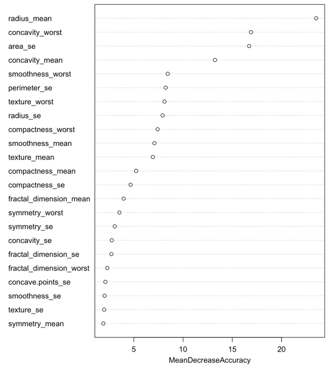

Brease Cancer Diagnostic Result Presiction
Introduction
Breast cancer is the most common cancer amongst women, affecting many loved ones. In 2020 alone, there were 7.8 million women worldwide that were diagnosed with breast cancer, making this the most prevalent form of cancer. The early identification of the disease can allow patients to achieve survival chances of 90% or higher as breast cancer treatments are highly effective.
There are many methods for detection and diagnosis of breast cancer; one of the methods is a diagnostic mammography where a small dose of radiation is used by a radiologist to make an x-ray image of the breast tissue. The accuracy of the mammography depends not only on the quality of the images generated by the x-ray procedure, but also on the skills and the ability of the radiologist interpreting the data.
Problem Statement
We will be trying to solve misdiagnosis issues by utilizing data analytic tools to classify tumors into malignant (cancerous) or benign (non-cancerous). Through this project classification models will be built that can predict the cancer types. Our goal is to build models that can improve and assist the preliminary diagnosis results for the diagnosing centers, labs, and doctors.
Data Set
Breast Cancer Wisconsin (Diagnostic) dataset is used in building classification models to predict the type of breast cancer. The dataset is downloaded from Kaggle (https://www.kaggle.com/yasserh/breast-cancer-dataset/version/1). It contains 569 records and 32 attributes, 30 of which are X-ray scan outputs, and one column is the diagnosis result of whether a tumour is Malignant or Benign.
EDA
The variables were computed from a digitized image of a fine needle aspirate (FNA) of a breast mass. They are radius, texture, perimeter, area, smoothness, compactness, concavity, concave points, symmetry, and fractal dimension. Each of them has three versions: mean, standard error, and worst, which means the average value of three worst tumor cases.
Variable Types
The histogram plots of riagnosis and radius_mean
Model Selection
LDA & QDA
Linear discriminant analysis (LDA) is a straightforward method for classification. It is based on the assumption that each class can be modeled by a Gaussian distribution and that all the classes share the same covariance matrix. Quadratic discriminant analysis (QDA) is similar to LDA but without the assumption that the classes share the same covariance matrix, i.e., each class has its own covariance matrix. In this case, the boundary between classes is a quadratic surface instead of a hyperplane.
KNN
KNN is based on the local minimum of the target function, which is used to learn an unknown function of desired precision and accuracy. The algorithm also finds the neighborhood of an unknown input, its range or distance from it, and other parameters. It is based on the principle of “information gain”— the algorithm finds out which is most suitable to predict an unknown value.
Random Forest
A random forest is a supervised machine learning algorithm that is constructed from decision tree algorithms. The ‘forest’ generated by the random forest algorithm is trained through bagging or bootstrap aggregating. Bagging is an ensemble meta-algorithm that improves the accuracy of machine learning algorithms. It predicts by taking the average or mean of the output from various trees. Increasing the number of trees increases the precision of the outcome.
Results

The performance indicators of all the models
We want the false negative rate to be as low as possible. The random forest model shows the best performance.
Random Forest Variable Importance
Random forest models can show the variable importance. As the variable importance plot shows, the mean decrease accuracy of the most important variable, radius_mean, is 23.52%, indicating that if we exclude radius_mean from the model, the overall accuracy of the model will drop by 23.52%. The top 5 powerful predictive variables for the tumor types are listed in the table below. They are radius_mean, concavity_worst, area_se, concavity_mean, and smoothness_worst. If we want to predict the tumor type, we look at these five variables first.
The top 5 important variables in terms of mean decrease accuracy
The variable importance plot
Recommendations
The criteria used to select the prediction model are finding the model with the highest accuracy and the lowest type II error or false negative rate while keeping the Type I error or false positive rate as low as possible. The purpose is to avoid the missing diagnosis of malignant tumours. This also minimizes the possibility of false positive mammograms, which leads to increased anxiety for patients who will need extra tests to rectify the erroneous result.
According to the summary of the performance table above, random forest model has the highest accuracy and lowest type I and type II errors. It also has the highest F-score and AUC value.
It is recommended that the radiologists and doctors use the random forest model to predict whether the tumor is malignant or benign. The prediction result can be used as a cross-check reference for their diagnosis results.
Shortcoming
Random forest requires high computing power and is ineffective for real-time predictions due to it generates a large number of decisions trees at the backend and randomly selects variables to split each tree.
Moreover, any change in the input variables collected from mammography will require retraining a collection of classification models and then selecting the best one as per the evaluation criteria used in the paper. As a result, the RF model may not work for other doctors and radiologists employing different parameters to diagnose breast cancer.
Discussion
As seen in the analysis above, using the right statical tools was crucial in getting the right useful and effective results that healthcare professionals can use. It was revealed that, even though the same data set was used, depending on the statistical tool, the data produced much different results with different rates of Type I and Type II errors. This shined a light on the importance of not only selecting the correct data, but testing different tools and selecting the most effective one for the best outcome of patient care.
In addition to selecting the correct data analytics tool, there is a significant implication to using the right data for the analysis as high-quality data with characteristics such as: good validity, accuracy, completeness, consistency, and uniformity, allows data analysis to be performed that results in correct conclusion about the data, improving the overall advancement of the healthcare industry and quality of patient care.